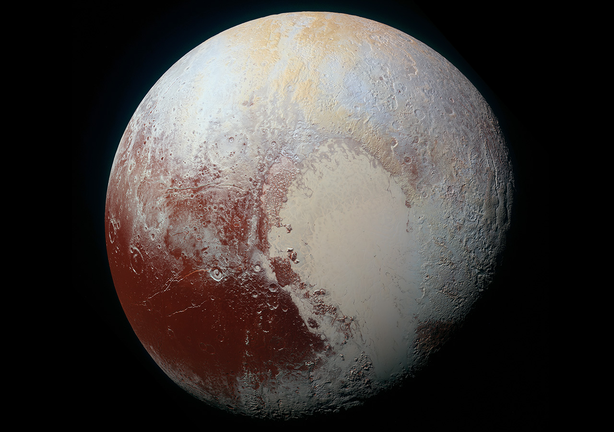
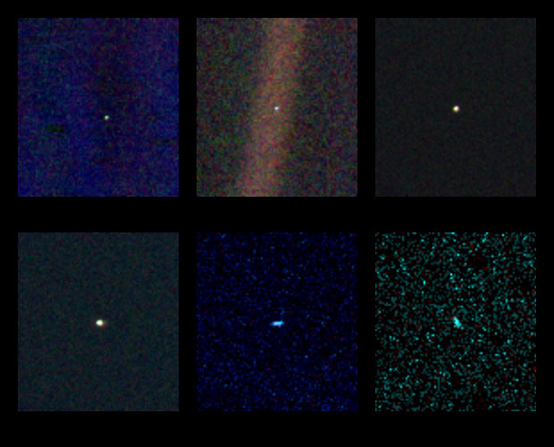

The planetary system we call home is located in an outer spiral arm of the Milky Way galaxy.
Our solar system consists of our star, the Sun, and everything bound to it by gravity – the planets Mercury, Venus, Earth, Mars, Jupiter, Saturn, Uranus, and Neptune; dwarf planets such as Pluto; dozens of moons; and millions of asteroids, comets, and meteoroids.
Beyond our own solar system, there are more planets than stars in the night sky. So far, we have discovered thousands of planetary systems orbiting other stars in the Milky Way, with more planets being found. Most of the hundreds of billions of stars in our galaxy are thought to have planets of their own, and the Milky Way is but one of perhaps 100 billion galaxies in the universe.
While our planet is in some ways a mere speck in the vast cosmos, we have a lot of company out there. It seems that we live in a universe packed with planets – a web of countless stars accompanied by families of objects, perhaps some with life of their own.
Namesake
There are many planetary systems like ours in the universe, with planets orbiting a host star. Our planetary system is named the "solar system" because our Sun is named Sol, after the Latin word for Sun, "solis," and anything related to the Sun we call "solar."
Size and Distance
Our solar system extends much farther than the eight planets that orbit the Sun. The solar system also includes the Kuiper Belt that lies past Neptune's orbit. This is a sparsely occupied ring of icy bodies, almost all smaller than the most popular Kuiper Belt Object – dwarf planet Pluto.

Beyond the fringes of the Kuiper Belt is the Oort Cloud. This giant spherical shell surrounds our solar system. It has never been directly observed, but its existence is predicted based on mathematical models and observations of comets that likely originate there.
The Oort Cloud is made of icy pieces of space debris - some bigger than mountains – orbiting our Sun as far as 1.6 light-years away. This shell of material is thick, extending from 5,000 astronomical units to 100,000 astronomical units. One astronomical unit (or AU) is the distance from the Sun to Earth, or about 93 million miles (150 million kilometers). The Oort Cloud is the boundary of the Sun's gravitational influence, where orbiting objects can turn around and return closer to our Sun.
The Sun's heliosphere doesn't extend quite as far. The heliosphere is the bubble created by the solar wind – a stream of electrically charged gas blowing outward from the Sun in all directions. The boundary where the solar wind is abruptly slowed by pressure from interstellar gases is called the termination shock. This edge occurs between 80-100 astronomical units.
Two NASA spacecraft launched in 1977 have crossed the termination shock: Voyager 1 in 2004 and Voyager 2 in 2007. Voyager 1 went interstellar in 2012 and Voyager 2 joined it in 2018. But it will be many thousands of years before the two Voyagers exit the Oort Cloud.
Moons
There are more than 200 known moons in our solar system and several more awaiting confirmation of discovery. Of the eight planets, Mercury and Venus are the only ones with no moons. The giant planets Jupiter and Saturn lead our solar system’s moon counts. In some ways, the swarms of moons around these worlds resemble mini versions of our solar system. Pluto, smaller than our own moon, has five moons in its orbit, including the Charon, a moon so large it makes Pluto wobble. Even tiny asteroids can have moons. In 2017, scientists found asteroid 3122 Florence had two tiny moons.

Formation
Our solar system formed about 4.5 billion years ago from a dense cloud of interstellar gas and dust. The cloud collapsed, possibly due to the shockwave of a nearby exploding star, called a supernova. When this dust cloud collapsed, it formed a solar nebula – a spinning, swirling disk of material.
At the center, gravity pulled more and more material in. Eventually, the pressure in the core was so great that hydrogen atoms began to combine and form helium, releasing a tremendous amount of energy. With that, our Sun was born, and it eventually amassed more than 99% of the available matter.
Matter farther out in the disk was also clumping together. These clumps smashed into one another, forming larger and larger objects. Some of them grew big enough for their gravity to shape them into spheres, becoming planets, dwarf planets, and large moons. In other cases, planets did not form: the asteroid belt is made of bits and pieces of the early solar system that could never quite come together into a planet. Other smaller leftover pieces became asteroids, comets, meteoroids, and small, irregular moons.
Structure
The order and arrangement of the planets and other bodies in our solar system is due to the way the solar system formed. Nearest to the Sun, only rocky material could withstand the heat when the solar system was young. For this reason, the first four planets – Mercury, Venus, Earth, and Mars – are terrestrial planets. They are all small with solid, rocky surfaces.
Meanwhile, materials we are used to seeing as ice, liquid, or gas settled in the outer regions of the young solar system. Gravity pulled these materials together, and that is where we find gas giants Jupiter and Saturn, and the ice giants Uranus and Neptune.